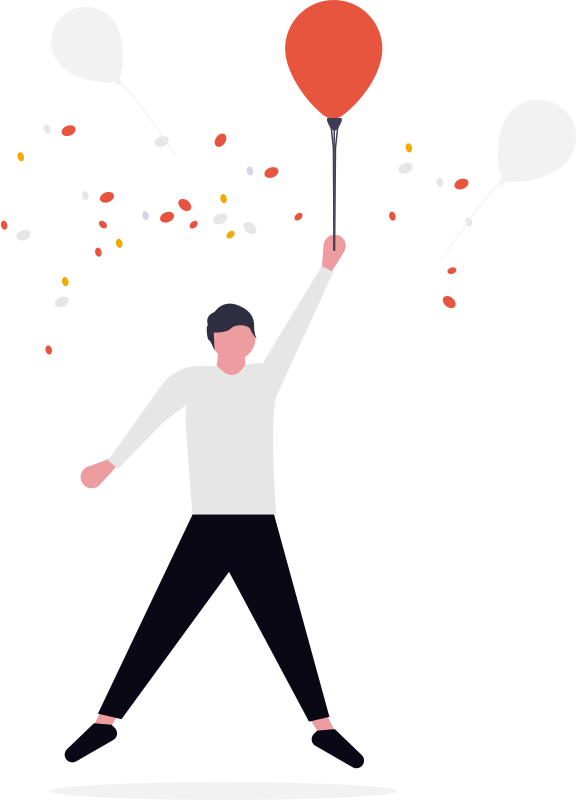
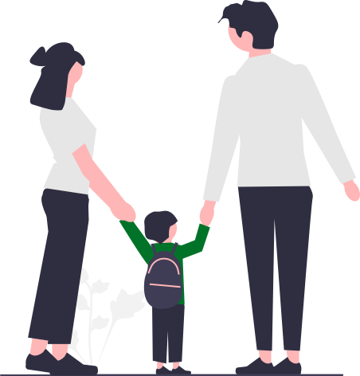
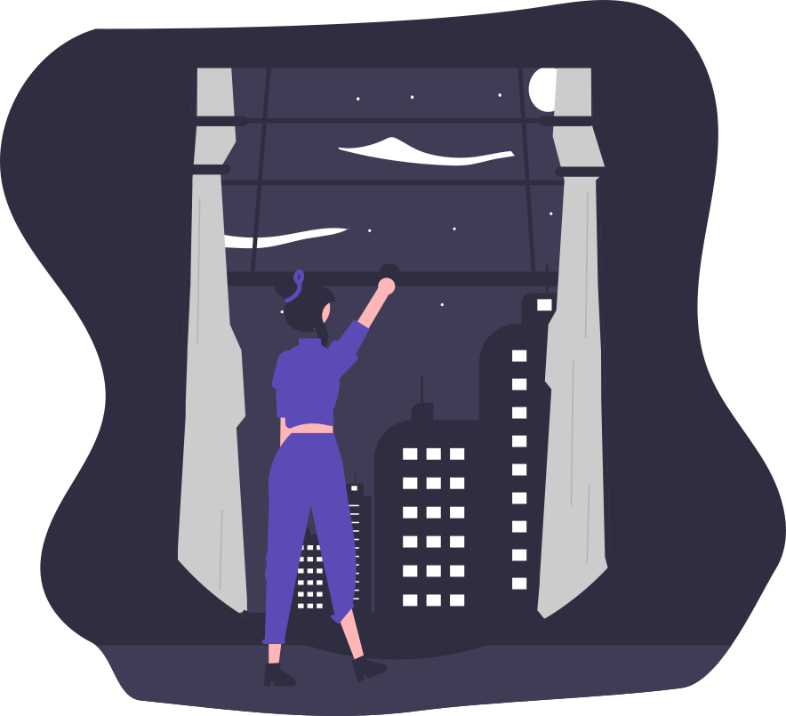

EZ.Path.AI
14:0016:3019:0022:00
"וואו, איזה צוות! אני חייב לכתוב להם ביקורת."
"אכתוב אחר כך..."
"אחרי הארוחה..."
פוף.

יוצא מהמרפאהחזרה לעבודה

הילדים
לילהככה זה.
מטופלים מרוצים
פשוט שוכחים.
מטופלים מרוצים
פשוט שוכחים.
17:00, אותו יום:
היי, איך היה הטיפול היום?
היה מעולה!
איזה כיף. נשמח לביקורת קצרה בגוגל 
74%
יותר סביר שיכתבו, אם מבקשים.מקור: rater8, 2025, סקר של יותר מ-1,000 מטופלים בארה״ב
אנחנו מזכירים להם בשבילכם.
באותו יום.
באותו יום.
EZ.Path.AI
055-271-6456